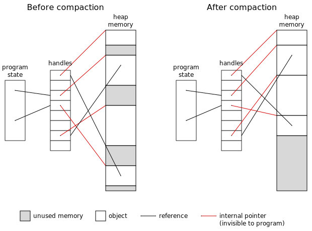

Memory Management Glossary: H¶
A | B | C | D | E | F | G | H | I | J | K | L | M | N | O | P | Q | R | S | T | U | V | W | X | Y | Z
- handle
A handle is an object that represents a resource.
Handles are used when the resource cannot be represented directly. For example, a file handle is an object passed between a process and the OS in order to access a file, because the file itself cannot be represented.
Relevance to memory management
In memory management, a handle is an object that represents another object. Handles are usually used because the object itself needs to be moved in memory(2), or even swapped out to disk. The program therefore cannot know the address of the object.
For example, Apple’s Classic Mac OS made extensive use of handles in its heap management to avoid problems due to fragmentation. If the Classic Mac OS Memory Manager could not satisfy a request for memory, it tried compacting the heap: moving all the relocatable objects together to squeeze out gaps. It could do this because the program only had handles on the objects, and not their actual addresses.
Handle-based heap.
Similar term
- header
See
- heap
Also known as
free store, freestore.
The heap or free store is the memory(2) area managed by dynamic allocation.
This use of heap is unconnected with the data structure used by the heapsort algorithm.
- heap allocation
Also known as
dynamic allocation.
Heap allocation or dynamic allocation means run-time allocation and deallocation of memory(1) in arbitrary order.
Dynamic allocation is usually for objects whose size, quantity, or lifetime could not be determined at compile-time. It is necessary to implement modern data structures, such as recursive trees and full closures.
Objects on the heap can be managed manually, as in C, or automatically, as in Lisp and Java.
Opposite terms
See also
- hit
A hit is a successful lookup in any form of cache(3), most commonly at some level of a storage hierarchy, such as a cache(1) or virtual memory system.
Opposite term
miss.
- hit rate
At any level of a storage hierarchy, the hit rate is the proportion of accesses which hit.
Opposite term
- hot
In the MPS
A variety in which many MPS functions assert that their data structures are valid, but functions on the critical path do not. Select it by defining CONFIG_VAR_HOT. Compare cool and rash.
- huge page
Also known as
large page, superpage.
Some processor architectures support multiple page sizes. This allows operating systems to better match the page size to the granularity of memory usage and so reduce the size of the page table.

Previous topic
Next topic
Downloads
MPS Kit release 1.111.0
All MPS Kit releases
Issues
Known issues
Issues fixed in release 1.111.0